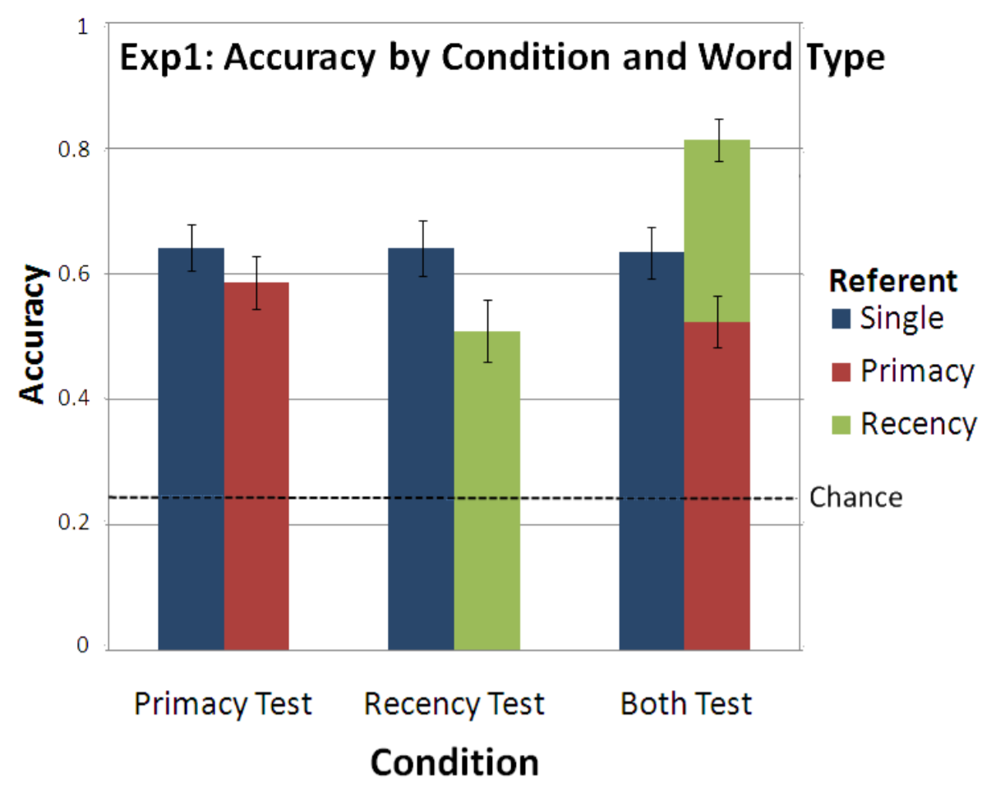
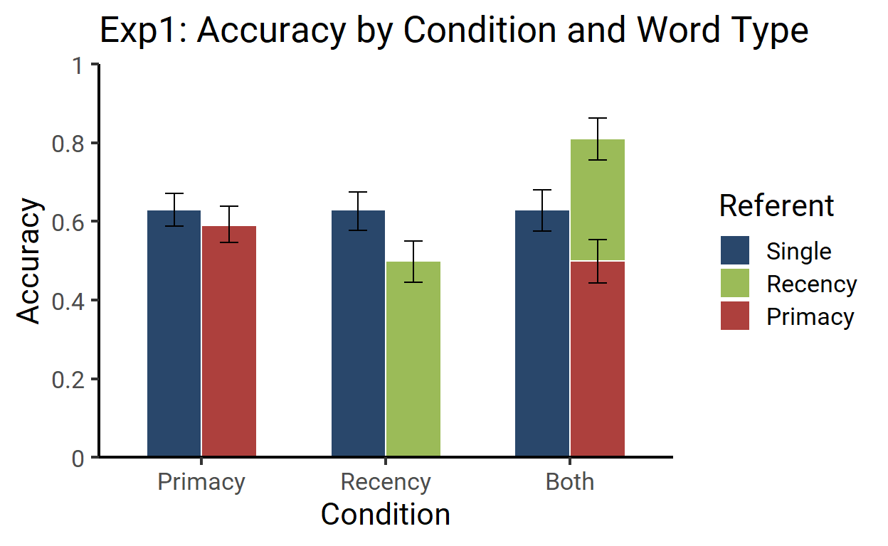
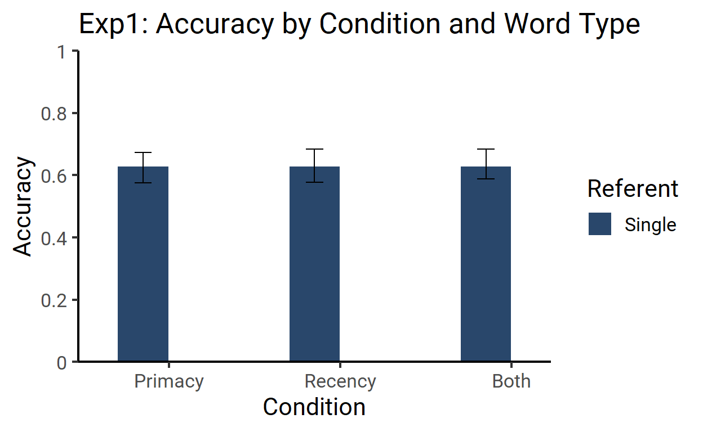
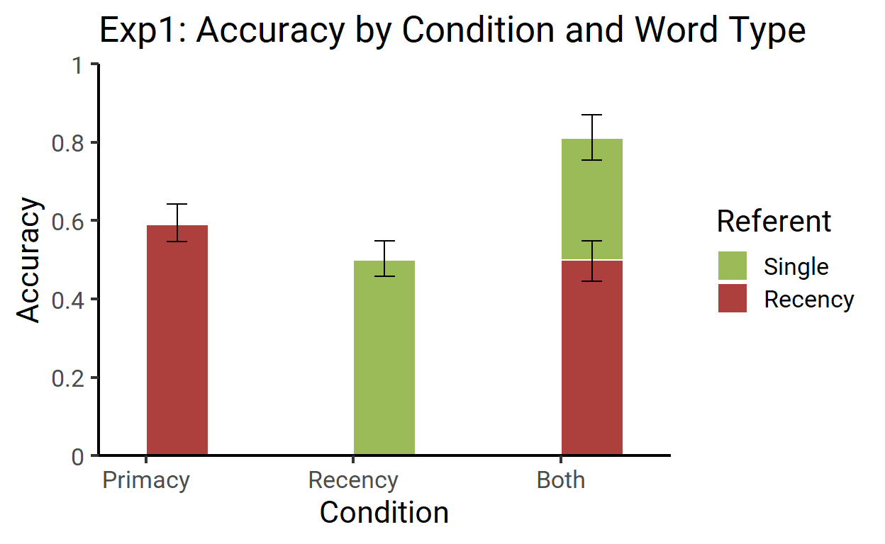
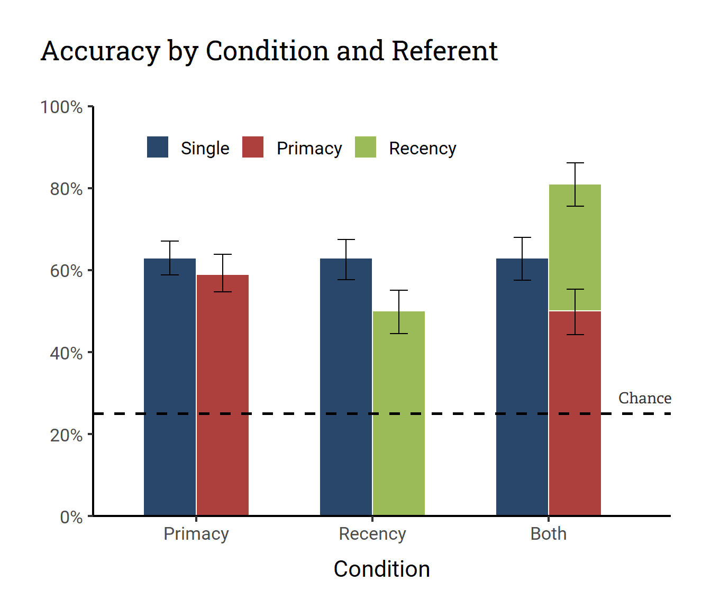

Plot Makeover #2
June Choe ![]()
This is the second installment of plot makeover where I take a plot in the wild and make very opinionated modifications to it.
Before
Our plot-in-the-wild comes from (Yurovsky and Yu 2008), a paper on statistical word learning. The plot that I’ll be looking at here is Figure 2, a bar plot of accuracy in a 3-by-3 experimental design.

Figure 1: Plot from Yurovsky and Yu (2008)
As you might notice, there’s something interesting going on in this bar plot. It looks like the red and green bars stack together but dodge from the blue bar. It’s looks a bit weird for me as someone who mainly uses {ggplot2} because this kind of a hybrid design is not explicitly supported in the API.
For this plot makeover, I’ll leave aside the issue of whether having a half-stacked, half-dodged bar plot is a good idea.1 In fact, I’m not even gonna focus much on the “makeover” part. Instead I’m just going to take a shot at recreating this plot (likely made in MATLAB with post-processing in PowerPoint) in {ggplot2}.
My Plan
Again, my primary goal here is replication. But I do want to touch up on some aesthetics while I’m at it.
Major Changes:
Move the title to above the plot
Move the legend inside the plot
Move/remove the y-axis title so it’s not vertically aligned
Minor Changes:
Remove grid lines
Put y-axis in percentages
Add white borders around the bars for clearer color contrast
After
First draft
For a first pass on the makeover, I wanted to get the hybrid design right.
The plot below isn’t quite there in terms of covering everything I laid out in my plan, but it does replicate the bar plot design specifically.
Plot

Code
library(tidyverse)
library(extrafont)
df <- tribble(
~Condition, ~Referent, ~Accuracy,
"Primacy", "Single", 0.63,
"Primacy", "Primacy", 0.59,
"Recency", "Single", 0.63,
"Recency", "Recency", 0.5,
"Both", "Single", 0.63,
"Both", "Primacy", 0.5,
"Both", "Recency", 0.31
) %>%
mutate(
error_low = runif(7, .04, .06),
error_high = runif(7, .04, .06),
Condition_name = factor(Condition, levels = c("Primacy", "Recency", "Both")),
Condition = as.numeric(Condition_name),
Referent = factor(Referent, levels = c("Single", "Recency", "Primacy")),
left = Referent == "Single",
color = case_when(
Referent == "Single" ~ "#29476B",
Referent == "Primacy" ~ "#AD403D",
Referent == "Recency" ~ "#9BBB58"
)
)
ggplot(mapping = aes(x = Condition, y = Accuracy, fill = color)) +
geom_col(
data = filter(df, left),
width = .3,
color = "white",
position = position_nudge(x = -.3)
) +
geom_errorbar(
aes(ymin = Accuracy - error_low, ymax = Accuracy + error_high),
data = filter(df, left),
width = .1,
position = position_nudge(x = -.3)
) +
geom_col(
data = filter(df, !left),
color = "white",
width = .3,
) +
geom_errorbar(
aes(y = y, ymin = y - error_low, ymax = y + error_high),
data = filter(df, !left) %>%
group_by(Condition) %>%
mutate(y = accumulate(Accuracy, sum)),
width = .1
) +
scale_fill_identity(
labels = levels(df$Referent),
guide = guide_legend(title = "Referent")
) +
scale_x_continuous(
breaks = 1:3 - .15,
labels = levels(df$Condition_name),
expand = expansion(.1)
) +
scale_y_continuous(
breaks = scales::pretty_breaks(6),
labels = str_remove(scales::pretty_breaks(6)(0:1), "\\.0+"),
limits = 0:1,
expand = expansion(0)
) +
labs(
title = "Exp1: Accuracy by Condition and Word Type"
) +
theme_classic(
base_family = "Roboto",
base_size = 16
)
As you might guess from my two calls to geom_col() and geom_errorbar(), I actually split the plotting of the bars into two parts. First I drew the blue bars and their errorbars, then I drew the green and red bars and their errorbars.
Effectively, the above plot is a combination of these two:2


A bit hacky, I guess, but it works!
Final touch-up

ggplot(mapping = aes(x = Condition, y = Accuracy, fill = color)) +
geom_col(
data = filter(df, left),
width = .3,
color = "white",
position = position_nudge(x = -.3),
) +
geom_errorbar(
aes(ymin = Accuracy - error_low, ymax = Accuracy + error_high),
data = filter(df, left),
width = .1,
position = position_nudge(x = -.3)
) +
geom_col(
data = filter(df, !left),
color = "white",
width = .3,
) +
geom_errorbar(
aes(y = y, ymin = y - error_low, ymax = y + error_high),
data = filter(df, !left) %>%
group_by(Condition) %>%
mutate(y = accumulate(Accuracy, sum)),
width = .1
) +
geom_hline(
aes(yintercept = .25),
linetype = 2,
size = 1,
) +
geom_text(
aes(x = 3.4, y = .29),
label = "Chance",
family = "Adelle",
color = "grey20",
inherit.aes = FALSE
) +
scale_fill_identity(
labels = c("Single", "Primacy", "Recency"),
guide = guide_legend(
title = NULL,
direction = "horizontal",
override.aes = list(fill = c("#29476B", "#AD403D", "#9BBB58"))
)
) +
scale_x_continuous(
breaks = 1:3 - .15,
labels = levels(df$Condition_name),
expand = expansion(c(.1, .05))
) +
scale_y_continuous(
breaks = scales::pretty_breaks(6),
labels = scales::percent_format(1),
limits = 0:1,
expand = expansion(0)
) +
labs(
title = "Accuracy by Condition and Referent",
y = NULL
) +
theme_classic(
base_family = "Roboto",
base_size = 16
) +
theme(
plot.title.position = "plot",
plot.title = element_text(
family = "Roboto Slab",
margin = margin(0, 0, 1, 0, "cm")
),
legend.position = c(.35, .9),
axis.title.x = element_text(margin = margin(t = .4, unit = "cm")),
plot.margin = margin(1, 1, .7, 1, "cm")
)
References
Footnotes
I actually don’t even have a strong feeling about this. It does look kinda cool.↩︎
I used a neat trick from the R Markdown Cookbook to get the plots printed side-by-side↩︎
Citation
@online{choe2020,
author = {Choe, June},
title = {Plot {Makeover} \#2},
date = {2020-11-08},
url = {https://yjunechoe.github.io/posts/2020-11-08-plot-makeover-2/},
langid = {en}
}